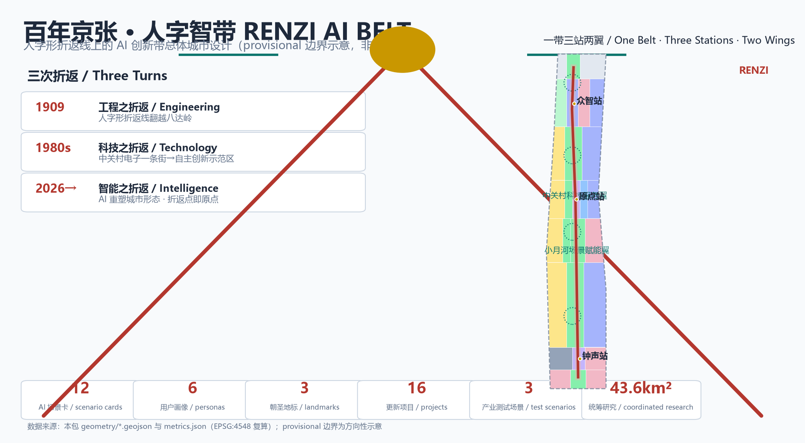
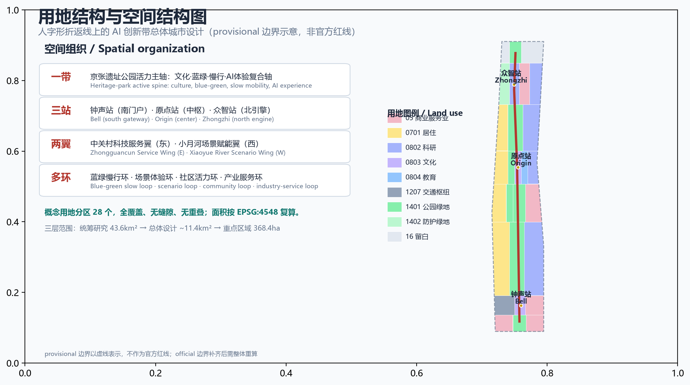
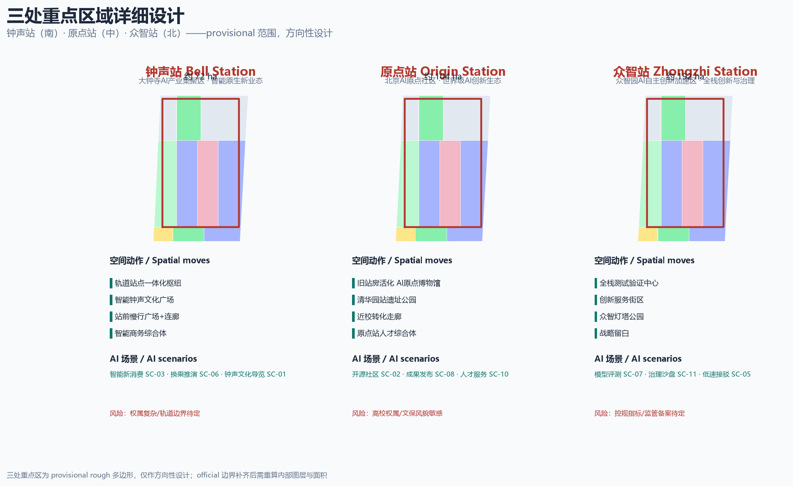
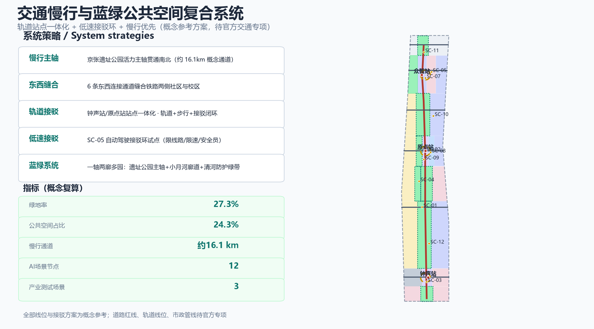
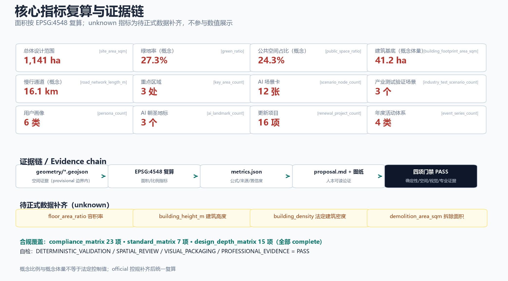

Centennial Jing-Zhang RENZI AI Belt — Master Urban Design on the Human-Character Switchback
Taking the Qinglongqiao human-character switchback of the Jing-Zhang Railway as the urban master motif, the proposal presents the RENZI AI BELT master concept: a one-belt/three-station/two-wing/multi-loop spatial structure, a RENZI logo direction, 12 AI scenario cards (incl. 3 industry test/validation scenarios), 6 user personas, 3 AI pilgrimage landmarks with an honor-rail memorial system, and the RENZI FEST annual event system; all spatial proposals are conceptual and ready for professional teams to deepen within official boundaries.
Centennial Jing-Zhang RENZI AI BELT — Master Urban Design on the Human-Character Switchback
Design Basis and Source List
This proposal is grounded in the Pre-Qualification Announcement for the Centennial Jing-Zhang AI Innovation Belt International Urban Design Call published by the Haidian Branch of the Beijing Municipal Commission of Planning and Natural Resources, and in the Agent Open-Call Taskbook Excerpt for the Centennial Jing-Zhang AI Innovation Belt open call Source Source Standard. Every design judgment is decomposed into a traceable source, a recomputable metric, a checkable layer, and a human-reviewable assumption; complete records live in sources.json, standard_matrix.json, and design_depth_matrix.json rather than in the prose Source.
Because the exact official redline is not yet in the cleared site package, this package uses the provisional rough polygons in brief/site-package/geometry/provisional_boundaries.geojson (geometry_role=provisional_constraint, official_boundary=false) for generation, visualization, and intake self-check only; they must not be used as official redlines, approval bases, or precise-area recalculation bases Spatial data Source. The recomputed overall design area is about 1,141 ha (11.41 km2), consistent with the announced ~11.4 km2 Metric. When official polygons arrive, the site boundary, key areas, land use, roads, green space, public space, buildings, phasing, and all area metrics must be recomputed.

The provisional boundary is shown as a faint dashed constraint; the visual focus is design intent, not the provisional polygon.
Three-Level Scope Framework
The three scopes are a cascading chain from industrial strategy to master urban design to detailed key-area design: the coordinated research area organizes the industrial ecosystem and future city form; the overall design area resolves renewal projects, land use, transport, blue-green networks, and urban character; the key detailed-design areas validate concrete spatial schemes and AI scenarios in the three districts Depth Standard.
| Level | Official area | Objective in this proposal | Data anchor |
|---|---|---|---|
| Coordinated research area | ~43.6 km2 | World-class AI innovation ecosystem, three-areas/two-wings synergy loop, future AI city form | compliance_matrix.json, standard_matrix.json Metric |
| Overall design area | ~11.4 km2 (recomputed ~1,141 ha here) | Spatial structure, land use, renewal projects, transport/rail, blue-green network, character | Spatial data Metric |
| Key detailed-design areas | ~368.4 ha | Detailed design of Bell Station, Origin Station, Zhongzhi Station | Spatial data Metric |
All three scopes share the "RENZI turn" (人字) master motif. The three key-area polygons are provisional rough bounds used only for directional design discussion, not parcel or road redlines Spatial data Source.

Coordinated Research Area: Industry and Future City Research
3.1 Master concept: RENZI AI BELT (人字智带)
In 1909 the Jing-Zhang Railway climbed the steep Badaling pass with the famous "RENZI (human-character) switchback" designed by Zhan Tianyou — China's first self-designed and self-built trunk railway, its first "turn" Source. From the 1980s, Zhongguancun evolved from an electronics street into a national independent-innovation demonstration zone — the second "turn" Source. This corridor now faces its third "turn": from rail and technology to intelligence, climbing again at each turning point Source Standard.
Main name: 人字智带 / RENZI AI BELT. "RENZI" evokes both the Jing-Zhang switchback — a world-class engineering symbol — and the human-centered ethics of the AI age: the turning point is where gradient meets strength, and where history meets the origin of the future.
Naming system (one belt, three stations, two wings): the spine is the Jing-Zhang RENZI Axis; the three key areas reuse the railway "station" motif — Bell Station (Dazhongsi AI industry cluster), Origin Station (Beijing AI Origin Community), and Zhongzhi Station (Zhongzhiyuan AI full-stack acceleration area); the two wings are the Zhongguancun Service Wing and the Xiaoyue River Scenario Wing Depth.
Logo direction (RENZI mark): two rails meeting at a turning point to form a geometric human-character (wedge) mark — double rails + apex node (the origin/turning point) + railbed base lines, in a heritage rust-red / innovation blue-green / honor gold palette. The mark extends to signage, station identities, event brands, and honor-rail plaques Depth. It is a conceptual direction; no existing institution marks, fonts, or enterprise logos are used.
Spatial structure: one belt, three stations, two wings, multiple loops. The belt is the Jing-Zhang Heritage Park active spine; the stations are Bell (south gateway), Origin (center), and Zhongzhi (north engine); the wings are Zhongguancun Service and Xiaoyue River Scenario; the loops are blue-green slow loops, scenario-experience loops, community loops, and industry-service loops. This structure is translated directly into the conceptual land-use partition in geometry/land_use.geojson Spatial data.
3.2 Three positioning statements, five functions, and the three-areas/two-wings loop
The three positioning statements — Centennial Jing-Zhang culture belt, urban AI life experience belt, and AI-integrated innovation belt — map to the cultural spine, the daily-life service network, and the three industrial stations respectively Source. The five functions map as follows: AI full-stack independent innovation to Zhongzhi Station; world-class AI innovation ecosystem to Origin Station; AI+ scenario empowerment paradigm to the Xiaoyue River Wing and Bell Station; intelligent AI vibrant city to the RENZI Axis life belt and public-space system; global voice in AI governance to the model-evaluation and safety-governance testbed at Zhongzhi Station Depth.
Three-areas/two-wings synergy loop: Origin (talent and open source) to Zhongzhi (full stack and governance) to Bell (formats and consumption) to Zhongguancun Wing (services and capital) to Xiaoyue River Wing (scenarios and experience) and back to Origin: a "talent–R&D–industrialization–services–scenarios–talent" loop Source Standard. This is a conceptual synergy suggestion, not a commitment of investment, recruitment, or policy.
3.3 Global AI innovation ecosystem cases and transferable mechanisms (6)
| Case | Core mechanism | Transfer to this proposal |
|---|---|---|
| Zhongguancun National Innovation Demonstration Zone (Haidian) | University–institute–enterprise–capital–policy pentagon synergy | Origin Station campus-adjacent conversion corridor; Zhongguancun Wing one-stop factor services Source |
| Shenzhen Bay Science & Technology Ecological Park | "Park as community" mixed industry-city model | Bell Station smart native mixed-use block Source |
| Hangzhou Future Sci-Tech City & Zhijiang Lab | Anchor platform + lab + open scenarios | Zhongzhi Station full-stack testbed and open-scenario data platform Source |
| Singapore one-north | Government-led work–live–learn–play district | TOD complexes at three stations and a blue-green slow network Source |
| King's Cross Knowledge Quarter, London | Brownfield renewal with universities + tech firms | Rail-heritage renewal belt along the Jing-Zhang Heritage Park Source |
| Kashiwa-no-ha Smart City / Seoul DMC | Public space as a living smart-scenario testbed, multi-party operation | Xiaoyue River Wing "public space as testbed" and open-scenario operation Source |
These cases are background-only references for transferable mechanisms, not commitments or benchmarks against this area Source.
3.4 Future AI city form and AI+ mobility
The coordinated study proposes a three-layer intelligent city form: intelligent base (edge compute, data spaces, new infrastructure), intelligent scenarios (AI+ mobility, public services, public space), and intelligent governance (city agents, human review, public participation) Depth. For AI+ mobility, the skeleton is "integrated transit stations + low-speed autonomous shuttle + slow-traffic priority"; all alignments and connections are reference schemes pending official road redlines and transport studies Spatial data Depth.
Overall Design Area: Urban Renewal and Regulatory-Plan-Level Urban Design
4.1 Design judgment
For the overall design area (~1,141 ha), the renewal logic is to use the Jing-Zhang Heritage Park spine as a "stitching line" that turns a severed rail corridor into a continuous public-space and innovation interface Depth Standard. The conceptual land-use partition follows "green in the middle, engines at the north and south, livable wings": parks and blue-green corridors form the open-space skeleton (Metric), the three stations concentrate industry and commerce, and the two wings host residential, research, and community services (Metric, Metric) Spatial data.
4.2 Functional layout and innovation indicator system
From south to north the belt forms "Bell Station (AI-native formats) — Xueyuan Road research belt (R&D and training) — Origin Station (open source and talent) — Zhongzhi Station (full-stack innovation and governance)"; the wings carry daily life and factor services. A conceptual Jing-Zhang AI Innovation Index (talent density, scenario openness, model-evaluation pass rate, public participation, accessibility coverage) is proposed with full formulas in metrics.json Depth Metric.
4.3 Urban renewal framework
The framework uses three strategies: retain (rail heritage, old station buildings, campuses, existing community fabric), repair (slow-traffic gaps, blue-green gaps, daily services), and build new (station gateways and industrial nodes) Depth. No parcel-level demolition/renovation conclusions are made: existing-building surveys and ownership data are absent, so demolition_area_sqm is pending official data (Metric) Standard.
4.4 Building scale and pending regulatory conditions
The 12 conceptual program envelopes in geometry/buildings.geojson recompute a building footprint of about 41.2 ha (Metric) and a concept gross floor area of about 247 ha at an assumed average of 6 storeys (Metric); these are conceptual design volumes, not statutory building scale. Official FAR, height, density, and green ratios await approved regulatory-plan conditions: floor_area_ratio, building_height_m, and the statutory density must be recomputed when they arrive Spatial data Source.
4.5 Jing-Zhang Heritage Park vibrant belt and urban character
The heritage-park spine runs about 9.7 km north–south, linking the three stations and two wings as a composite "culture–slow mobility–AI experience–ecology" belt Spatial data. Character control proposes a "rail-color palette" (heritage rust-red, AI blue-green, tech warm grey) with signature "turn" landmarks allowed at the three station gateways and moderate massing, street-wall control, and roof greening elsewhere Standard Depth.
Detailed Design of Key Areas
The three key areas use provisional rough polygons; all positioning, spatial moves, building updates, mobility, public space, and AI scenarios below are directional design for professional teams to deepen within the official boundaries Source Depth.

5.1 Bell Station — Dazhongsi AI Industry Cluster (~72 ha)
Positioning: AI-native new formats and an AI consumption-experience gateway Spatial data. Structure: Bell Station multimodal hub (Spatial data) as the core, with the hub to the west, the AI Bell cultural plaza in the center, and a smart mixed-use complex to the east. Buildings: retain existing commercial/office fabric, repair the station plaza and sky bridges, and build the AI Bell Cultural Hall (Spatial data). Mobility: integrated station interchange with below/above-ground links and a slow-traffic plaza. Public space: the AI Bell plaza turns "bell sound" into digital timekeeping and an AI cultural ritual. AI scenarios: smart consumption, bell-culture guide, interchange simulation. Risks: complex ownership and unresolved rail engineering boundaries, pending official redlines and surveys.
5.2 Origin Station — Beijing AI Origin Community (~104 ha)
Positioning: world-class AI innovation ecosystem and the origin of open-source talent Spatial data. Structure: the AI Origin Museum (Spatial data) created by activating the old Qinghuayuan station building, with talent housing to the west, the heritage park and museum block in the center, and campus-adjacent conversion education and research blocks to the east. Buildings: retain the old station and campus fabric, repair the campus-adjacent conversion corridor, and build the Origin Community Incubator (Spatial data) and Origin Station Talent Complex (Spatial data). Mobility: campus–park–block slow-traffic stitching with an origin-community commuter loop. Public space: Qinghuayuan Station heritage park plus a launch plaza. AI scenarios: open-source community, result launches, campus-adjacent incubation, talent services. Risks: university ownership and sensitive character areas; heritage and character controls pending official data.
5.3 Zhongzhi Station — Zhongzhiyuan AI Full-Stack Acceleration Area (~192 ha)
Positioning: the north engine of AI full-stack independent innovation and governance voice Spatial data. Structure: the Full-Stack Test & Validation Center (Spatial data) as the core, with the full-stack innovation park to the west, the innovation-service block in the center, an R&D park to the east, and the Zhongzhi Beacon park and strategic reserve at the north end. Buildings: retain existing industrial-park fabric, repair test and sharing facilities, and build the Innovation Service Tower (Spatial data) and the Zhongzhi Beacon (Spatial data). Mobility: external access via the Fifth Ring gateway with internal green slow loops and a low-speed shuttle. Public space: Beacon park and an open gallery for the governance testbed. AI scenarios: model evaluation, safety-governance testing, standards workshops. Risks: industrial land-use nature and planning indicators pending official regulatory plans; test scenarios must follow regulatory filing requirements.
AI Innovation Ecosystem, Personas, and AI+ Scenarios
6.1 AI innovation ecosystem map
The proposal develops a Jing-Zhang AI innovation ecosystem map around five chains (talent–R&D–industrialization–services–scenarios): Origin Station gathers open-source communities, universities, and conversion; Zhongzhi Station gathers models, compute, data, and test-validation; Bell Station gathers AI-native formats and consumption; the Zhongguancun Wing provides capital, policy, IP, and globalization services; the Xiaoyue River Wing provides everyday scenario experiments Source Standard. Factor mechanisms (land, space, industry, capital, talent, compute, data, scenarios) are conceptual suggestions, not supply commitments Depth.
6.2 User personas (6 types)
| Persona | Core needs | Spatial anchor |
|---|---|---|
| University student / open-source developer | Open-source collaboration, training, low-cost innovation | Origin incubator, Xueyuan Road training center |
| Young AI founder/startup | Incubation, capital, launch | Origin incubator, Zhongzhi service block |
| Researcher/engineer | Test-validation, compute and data, academic exchange | Zhongzhi test center, Xueyuan Road research belt |
| Resident (incl. older adults) | Daily services, accessibility, human fallback | Xiaoyue River life-service hub, community plazas |
| SME and industry service provider | Policy, legal, market, data-compliance services | Zhongguancun Wing, Bell business blocks |
| International visitor / overseas developer | Cultural guide, global events, open data | RENZI Axis culture belt, Origin museum, RENZI FEST venue |
These six personas correspond to the persona_count=6 metric and are referenced in each scenario card Metric.
6.3 AI scenario cards (12, incl. 3 industry test/validation scenarios)
Each card records spatial location, users, operating data, privacy boundary, human review, operator, visualization layer, and risk Source.
| ID | Scenario | Type | Location | Users | Human review & privacy |
|---|---|---|---|---|---|
| SC-01 | Jing-Zhang AI cultural guide line | Culture | RENZI Axis | Visitors/students/residents | Curated text; no face capture |
| SC-02 | Qinghuayuan AI Origin Museum (digital-twin hall) | Culture | Origin BLDG-003 | Visitors/developers | Human-curated content; anonymized display |
| SC-03 | AI Bell plaza (Dazhongsi) | Culture/public space | Bell BLDG-002 | Residents/visitors | Public-art sound/imagery only; one-touch off |
| SC-04 | Xiaoyue River AI life-service street | Daily life | Xiaoyue River BLDG-008 | Residents/older adults | Human windows retained; on-site guidance and manual handling for healthcare, social security, finance, and utility payment per Article 39 of the Barrier-Free Environment Law Standard |
| SC-05 | Low-speed autonomous shuttle loop | Industry test/validation | RENZI Axis + three stations | Commuters/visitors | Fixed route, speed limit, safety attendant, public test data |
| SC-06 | Station AI-integrated interchange & passenger-flow simulation | Industry test/validation | Bell/Origin stations | Commuters | Anonymized aggregate data; human dispatch review |
| SC-07 | Zhongzhi model evaluation & safety-governance testbed | Industry test/validation | Zhongzhi BLDG-005 | Researchers/developers | Safety assessment and filing per the Interim Measures for Generative AI Services Standard |
| SC-08 | Enterprise-service Copilot & industry-academia matching | Enterprise service | Zhongguancun Wing | Enterprises | Authorized enterprise data; human advisor fallback |
| SC-09 | Robot low-speed delivery & inspection corridor | Robotics | RENZI Axis/communities | Residents/merchants | Speed/time limits, avoidance rules, human takeover |
| SC-10 | AI health station with human-service fallback | Public service | Community spaces | Residents/older adults | Non-diagnostic guidance; navigation aid + human escort |
| SC-11 | City-agent governance sandbox & public feedback | Governance | Zhongzhi Station | Public/managers | Full human review; public risk notice Depth |
| SC-12 | AI public-space sensing & accessible mobility | Public space | RENZI Axis/stations | All | No identifiable personal imagery; demand statistics only Standard |
The 12 cards map to scenario_node_count=12; SC-05/06/07 are industry test/validation scenarios (industry_test_scenario_count=3), all conceptual pilot directions, not approved operations Metric Metric.
6.4 Scenario–space–operation mapping
Every card maps to a building envelope (SC-07 to BLDG-005), a road line (SC-05 to ROAD-001), and/or a public-space node (SC-03 to the PUBLIC plaza) Spatial data Spatial data. The operation rule is a four-step loop — "open scenario, anonymize data, human review, periodic evaluation" — avoiding over-monitoring or non-reviewable scenarios Source.
Land Use, Building Scale, and Retain-Renovate-Demolish Strategy
7.1 Land-use layout and functional mix
The conceptual partition contains 28 parcels (land_use_parcel_count=28) coded per the Land Use Classification Guide (Standard) and fully covering the submitted boundary with no gaps or overlaps Spatial data Depth.
| Code | Use | Concept area (ha) | Note |
|---|---|---|---|
| 05 | Commercial/services | 165.5 | Bell business, Zhongguancun Wing service blocks |
| 0701 | Residential | 226.9 | Livable wings and talent communities |
| 0802 | Research | 291.5 | Xueyuan Road research belt, Zhongzhi R&D |
| 0803 | Culture | 37.3 | AI Bell plaza, AI Origin museum block |
| 0804 | Education | 19.0 | Campus-adjacent conversion education |
| 1207 | Transport hub | 33.4 | Bell hub (concept; not a road redline) |
| 1401 | Park green | 277.1 | Heritage-park spine, Xiaoyue River corridor |
| 1402 | Buffer green | 34.6 | Qinghe ecological buffer |
| 16 | Reserve | 55.9 | Zhongzhi strategic reserve |
The mix reflects "green in the middle, engines at north/south, livable wings": green and open space total about 312 ha (Metric + Metric), with commercial, research, and cultural land concentrated at the three stations Depth.
7.2 Building scale and retain-renovate-demolish
geometry/buildings.geojson provides 12 conceptual program envelopes (building_count=12) recomputing a footprint of about 41.2 ha (Metric) and a concept building-density of about 3.6% (Metric). Retain/renovate/demolish conclusions are conceptual only; existing-building and ownership data are absent, so demolition_area_sqm is pending official data (Metric) Source. Envelopes serve spatial organization and scenario narrative only; statutory scale, height, and FAR await approved regulatory-plan conditions Standard Depth.
7.3 Space supply and operation strategy
Industry space uses four supply types (headquarters, incubators/accelerators, test/pilot facilities, shared labs); talent space combines talent apartments, youth co-living, and community services; public space emphasizes bookable, testable, operable AI scenario interfaces Depth. These are conceptual supply strategies for professional teams to deepen Source.
Transport, Rail, Municipal Infrastructure, and Public Services
8.1 Mobility and slow traffic
The mobility skeleton is "integrated transit stations + low-speed shuttle loop + slow-traffic priority"; all alignments, redlines, and engineering schemes are reference concepts pending official transport studies Depth Spatial data.
- Slow spine: the Jing-Zhang Heritage Park active spine runs north–south (about 16082 m, Metric) for walking, cycling, and accessible movement.
- East–west stitching: six east–west connectors (e.g.,
ROAD-002) bridge the communities and campuses separated by the railway Spatial data. - Rail integration: Bell Station and Origin Station (and nearby rail stations) receive integrated-interchange design concepts for a "rail + walk + shuttle" last-3-km loop; specific stations and alignments await official rail materials and are not stated as approved alignments Depth.
- Low-speed shuttle: the SC-05 autonomous shuttle loop is a pilot direction with fixed routes, speed limits, and safety attendants Metric.
8.2 Municipal and new infrastructure
The proposal suggests merging "traditional municipal infrastructure + new infrastructure": distributed energy and microgrids, edge compute nodes, a unified data space, and a low-altitude logistics corridor as conceptual pilots Depth. Municipal capacity, pipelines, fire, and energy loads await official municipal data; no engineering-feasibility conclusions are made Source.
8.3 Public services
Innovation-service platforms (Zhongguancun Wing), talent services (Origin Station), and AI public services (health stations, legal stations, training) are laid out on a 15-minute living-circle basis Metric. AI public services must retain human channels and on-site guidance for healthcare, social security, finance, and utility-payment contexts per the Barrier-Free Environment Law Standard Depth.

Blue-Green Network, Public Space, and Urban Character
9.1 Blue-green network
The blue-green system is organized as "one axis, two corridors, multiple parks": the Jing-Zhang Heritage Park active spine, the Xiaoyue River blue-green corridor, the Qinghe ecological buffer, and parks including the South Gateway Smart Park, Qinghuayuan Station Heritage Park, and Zhongzhi Beacon Park Spatial data Spatial data. Recomputed green space is about 312 ha / 27.3% (Metric, Metric); public space about 277 ha / 24.3% (Metric, Metric). These are conceptual ratios, not statutory green ratios, pending regulatory conditions Depth.
9.2 AI public space, pilgrimage landmarks, and honor-display system
AI public space follows the "bookable, testable, operable" principle, with segment-based AI experience nodes, movable components, and public interfaces along the park Source.
Three AI pilgrimage landmarks (conceptual):
1. RENZI Origin Tower (Origin Station): a memorial tower whose structure follows the human-character switchback, marking the opening of the Jing-Zhang Railway and the birth of the AI Origin Community, with an "origin light" lit at night Spatial data Depth. 2. Zhongzhi Beacon (north end of Zhongzhi Station): a "lighthouse" of AI model evaluation and governance whose beam symbolizes traceable, explainable intelligence, with an open gallery at the governance testbed Spatial data. 3. Jing-Zhang Honor Rail (along the RENZI Axis): an honor-display system on recycled sleepers/track carrying the permanent memorial scheme — contributors' GitHub names and Agent names — with a digital honor archive Source.
Together they form a "pilgrimage–honor–governance" narrative line, corresponding to ai_landmark_count=3 Metric. Landmarks are conceptual directions; no institution, person, or enterprise identity is used without authorization, and they are not stated as approved construction.
9.3 Urban character
Character is shaped by the "rail-color palette + turn-configuration landmarks + interface control": rust-red (heritage), blue-green (innovation), and warm grey (technology); turn-configuration landmarks at the three gateways; street-wall, cornice, and roof-greening control elsewhere Standard Depth.
Renewal Projects, Implementation Policy, and Phasing
10.1 Renewal project list (16 items)
| No. | Project | Type | Location | Phase | Dependency / risk |
|---|---|---|---|---|---|
| P-01 | Heritage-park spine through-connection | Public space | RENZI Axis | Near | Slow-traffic gaps, ownership along the line; pending survey |
| P-02 | Qinghuayuan AI Origin Museum (old station activation) | Culture | Origin | Near | Heritage and character approval; pending heritage data |
| P-03 | Origin campus-adjacent conversion corridor | Industry | Origin east | Near | University ownership coordination |
| P-04 | Bell Station AI Bell plaza | Public space | Bell | Near | Rail engineering boundary |
| P-05 | Zhongzhi testbed phase 1 | Industry | Zhongzhi | Near | Regulatory filing; pending planning indicators |
| P-06 | Xiaoyue River AI life-service street | Daily life | Xiaoyue River | Near | Community participation |
| P-07 | Low-speed shuttle loop pilot | Mobility | Three stations | Mid | Safety and test permits |
| P-08 | Bell/Origin station rail integration | Mobility | Two stations | Mid | Rail special studies; pending official redlines |
| P-09 | Zhongzhi full-stack innovation complex | Industry | Zhongzhi | Mid | Land-use nature and regulatory plan |
| P-10 | Zhongguancun Wing factor-service hub | Industry | Zhongguancun Wing | Mid | Recruitment and operation mechanism |
| P-11 | AI public-space component library & accessibility system | Public space | Whole belt | Mid | Standards and maintenance Standard |
| P-12 | City-agent governance sandbox | Governance | Zhongzhi | Mid | Data governance and human review |
| P-13 | Jing-Zhang Honor Rail memorial system | Culture | RENZI Axis | Mid | Memorial scheme approval |
| P-14 | RENZI Origin Tower | Landmark | Origin | Long | Urban-design approval |
| P-15 | Zhongzhi Beacon | Landmark | Zhongzhi north | Long | Urban-design approval |
| P-16 | Global AI event center (RENZI FEST venue) | Operations | Zhongzhi/Origin | Long | Event operation mechanism |
10.2 Phasing
geometry/phasing.geojson divides the overall area into three phases Spatial data: the near-term priority demonstration belt (south to the Origin area, about 832 ha, Metric) first connects the spine and activates the three station gateways and Origin community; the mid-term innovation expansion belt (about 148 ha, Metric) advances test-validation, rail integration, and industry services; the long-term strategic upgrade belt (about 161 ha, Metric) builds the beacons, event center, and strategic reserve Depth.
10.3 Implementation policy and long-term operation
Global AI event system: the annual brand "RENZI FEST (人字节)" is proposed each August (echoing the call's opening month and the railway's opening anniversary), with four quarterly series — Developer Week, Model-Evaluation Competition, Open-Scenario Season, and AI Governance Forum Source. Developer community operation: this open-source repository is the community base, with a developer-in-residence program, an open-scenario data platform, and the annual "Turning Point Award". Conversion pathway: events attract, scenario experience, test-validation (Zhongzhi), policy services (Zhongguancun Wing), then landing at the three stations. International communication: bilingual content, an AI pilgrimage map, and a digital honor-rail archive. All events, recruitment, funding, and policies are conceptual suggestions, not confirmed government arrangements or implementation commitments Source Depth.
Metrics, Area Recalculation, and Compliance Matrix
11.1 Core indicators and design meaning
- Green ratio ~27.3% (Metric): supports a "garden-style innovation district" and talent quality of life; a conceptual ratio, with the statutory green ratio pending regulatory conditions.
- Public-space ratio ~24.3% (Metric): supports innovation exchange, public participation, and open AI scenarios.
- Building footprint ~41.2 ha (Metric): conceptual program envelopes for the three station gateways and industrial nodes, not existing or statutory building scale.
- Slow spine about 16082 m (Metric): stitches the east and west sides of the railway under the "rail + slow traffic + shuttle" skeleton.
- Three key areas recompute to about 193 ha (Zhongzhi, Metric), 104 ha (Origin, Metric), and 72 ha (Bell, Metric) — provisional values to be recomputed when official polygons arrive Depth.
11.2 Metric recalculation table (machine-audit layer)
All metrics below are recomputable from geometry/*.geojson and metrics.json; metrics with status=unknown (statutory FAR, height, density, demolition area) are pending official data and are not displayed as numbers Source.
| Metric group | Metrics and recomputed values (full formulas in metrics.json) |
|---|---|
| Scope and area | Metric：~1141.3 ha |
| Conceptual land-use parcels (1) | Metric：28 |
| Conceptual land-use parcels (2) | Metric：~33.4 ha |
| Buildings and intensity (concept) | Metric：12 |
| Blue-green and public space | Metric：~311.8 ha |
| Mobility | Metric：16082.5 |
| Key-area areas (provisional) | Metric：~192.9 ha |
| Phasing areas | Metric：~832.4 ha |
| AI scenarios and task response | Metric：12 |
11.3 Compliance and evidence matrices
compliance_matrix.json covers all mandatory announcement tasks (1.3/1.4/1.5) and the six agent tasks (agent.1–agent.6), each linked to report sections, layers, metrics, drawings, and self-checks; standard_matrix.json covers all mandatory formal standards; the 15 core design-depth items in design_depth_matrix.json are all complete Depth. Machine validation passing only establishes eligibility for content review, not professional approval Source.

Risk, Copyright, and Compliance
- Data legality: only public or cleared data is used; the provisional boundary and background materials are labeled with use and limitation in
sources.json,assumptions.json, and the narrative, and are not upgraded into official redlines, statutory controls, or implementation commitments Source. - Copyright: the text, graphics, and data are original AI-agent output (the logo is a conceptual direction using no unauthorized fonts, images, trademarks, personas, or enterprise identities); cited materials are registered with source and license Depth. Full statement:
report/copyright_statement.md. - Non-public data exclusion: no non-public planning drawings, non-public spatial data, internal control indicators, or personal data are used Source.
- AI-generation responsibility: this package is generated by an AI agent within a human-participation framework; methods and limits are disclosed in
agent.jsonand this document. All spatial proposals are conceptual suggestions/reference schemes for professional teams to deepen — not a substitute for statutory planning and not a government approval conclusion Standard. - No official approval/implementation commitments: all renewal projects, events, recruitment, funding, and policy arrangements are conceptual; statutory indicators such as
floor_area_ratioandbuilding_height_mawait official regulatory conditions Metric. - Pending data and professional review: official boundaries, regulatory plans, existing buildings, ownership, road redlines, municipal, and heritage data are pending (see
assumptions.json) and require unified recalculation and review by professional teams once official data arrives Depth.
References
1. Haidian Branch, Beijing Municipal Commission of Planning and Natural Resources: Pre-Qualification Announcement for the Centennial Jing-Zhang AI Innovation Belt International Urban Design Call, 2026-05-09 (formal-ready primary basis). 2. open-city-ai/haidian: Agent Open-Call Taskbook Excerpt for the Centennial Jing-Zhang AI Innovation Belt, 2026-05-18 (formal-ready task basis). 3. Ministry of Housing and Urban-Rural Development: Administrative Measures for Urban Design, 2017 (urban-design and character basis). 4. Ministry of Housing and Urban-Rural Development: Measures for Compiling and Approving Regulatory Detailed Plans of Cities and Towns (regulatory-plan urban-design basis). 5. Ministry of Natural Resources: Guide to Land Use Classification for Territorial Spatial Survey, Planning, and Use Control, 2023-11 (land-use classification basis). 6. Standing Committee of the National People's Congress: Barrier-Free Environment Law of the People's Republic of China, 2023 (accessibility and human-fallback basis). 7. Cyberspace Administration of China et al.: Interim Measures for the Management of Generative AI Services, 2023 (AI service safety background). 8. State Council General Office: Implementation Plan for Solving the Difficulties of Older Adults in Using Smart Technology (Guobanfa [2020] No. 45) (age-friendly background). 9. China Railway Museum / official public materials: history of the Jing-Zhang Railway and the Qinglongqiao RENZI switchback (background). 10. Zhongguancun Administrative Committee / Haidian public materials: Zhongguancun innovation history (background). 11. Global innovation-district public materials: Shenzhen Bay, Hangzhou Future Sci-Tech City, Singapore one-north, London King's Cross Knowledge Quarter, and Kashiwa-no-ha (background; see sources.json).
Human-readable bibliography above; the complete machine index (source, license, use, retrieval date) is in
sources.json, with standards and depth evidence in the two matrices Source.